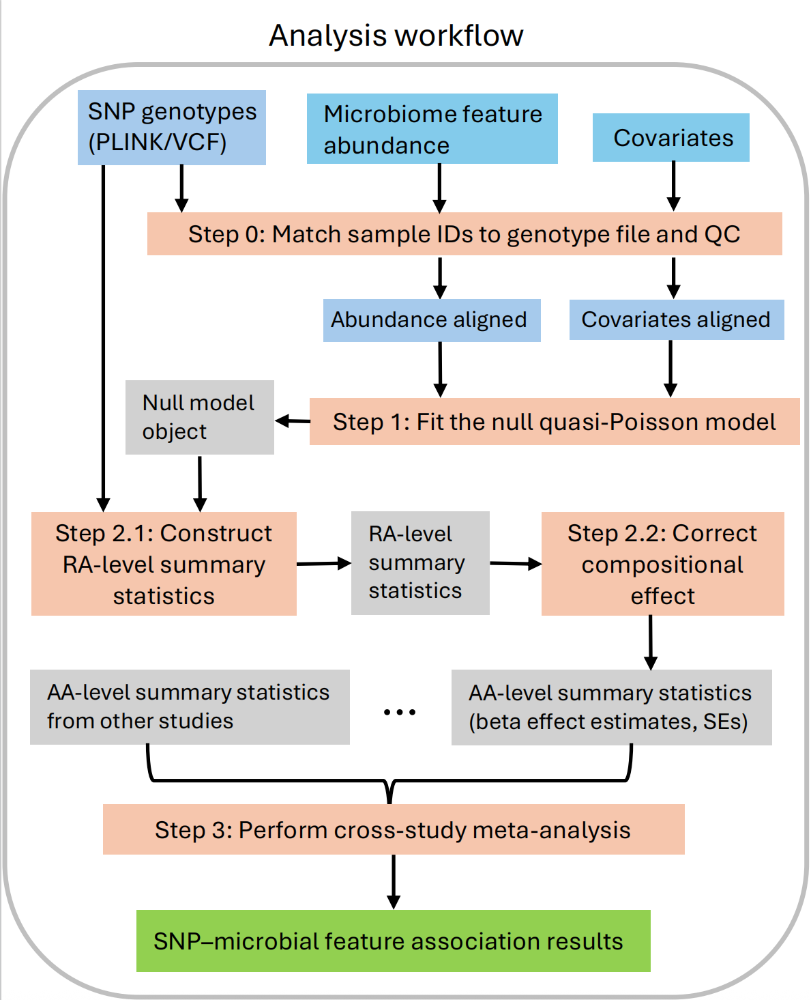
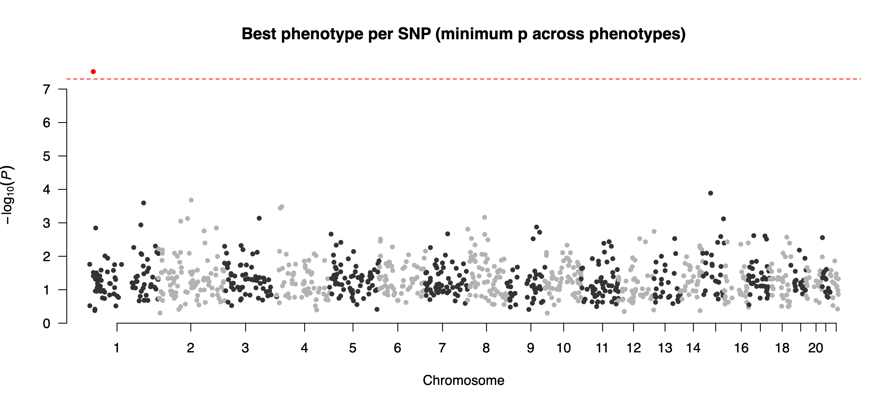
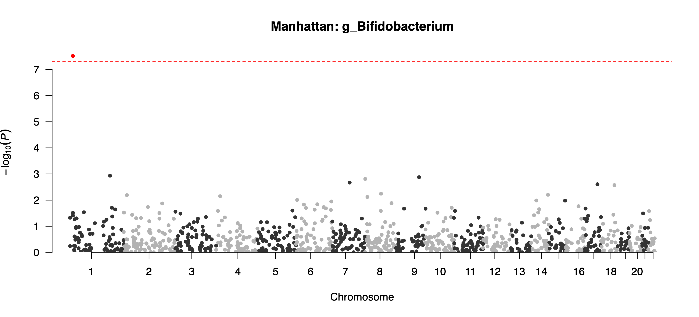
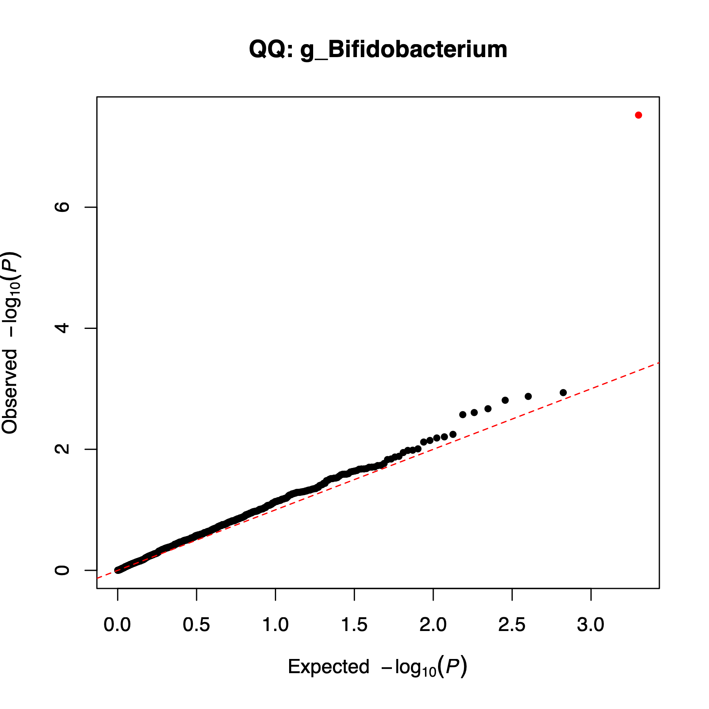
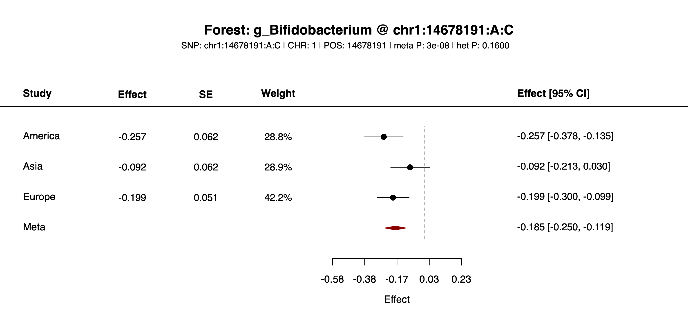

PALMGWAS Usage Guide
This page explains how to run the PALMGWAS R package: key functions, required inputs, outputs, and the Step0-Step4 workflow.
Feedback
For questions, bug reports, or user feedback, please contact cheese.lee.888@gmail.com.
Environment & Dependencies
Set up the runtime environment before installing or running any PALMGWAS command. The package depends on compiled R libraries, so the most reliable workflow is to keep R and all R package dependencies inside one isolated environment instead of mixing system-level and project-level installs.
Use the repository's
pixi environment when running PALMGWAS from source. Pixi sets up the correct R version and required packages in one isolated environment, which helps avoid conflicts with other R installations on your computer.
Use Docker if you want a ready-to-use version of PALMGWAS. The Docker image already includes PALMGWAS and its R package dependencies, so you do not need to install them manually.
Install all R package dependencies in the same R environment that will be used to run PALMGWAS. Mixing packages installed under different R versions or package libraries is a common cause of setup errors.
- R version: PALMGWAS requires
R >= 4.1.0, as specified in the packageDESCRIPTION. The pixi environment already provides a compatible R version. - Required R packages: PALMGWAS and its R package dependencies. The installation commands below install these packages into the selected runtime environment.
- System consistency: install PALMGWAS and its R package dependencies in the same R environment that will be used to run the workflow scripts.
- If you do not use pixi or Docker: create a clean local R environment yourself, install all required packages into that environment, and run PALMGWAS workflow scripts with the same R installation.
For each analysis, choose one setup and use it consistently: pixi, local R, or Docker/Apptainer. Avoid switching between these setups in the same project folder because each one may use a different R installation, package library, and file-path convention.
Installation
Installation Comparison
| Method | Platform | Dependencies | Best For |
|---|---|---|---|
| Docker image | All platforms with Docker | Docker image only | Reproducible runs without local R package setup |
| pixi source | Linux, macOS | pixi-managed R environment | Recommended local runs from the source tree |
| local R source | Linux, macOS | R >= 4.1.0 plus compiled R package dependencies | Users who manage their own R and system libraries |
| Apptainer/SIF | HPC clusters | Apptainer/Singularity image | Cluster jobs where Docker is unavailable |
Option A: Docker image
# pull the published image
docker pull --platform=linux/amd64 cheeselee/palmgwas:latest
# enter the repository example directory
cd /path/to/PALMGWAS
# run a packaged script inside the container
docker run --rm --platform=linux/amd64 \
-v "$PWD":/work -w /work \
cheeselee/palmgwas:latest \
step1_null.R --helpThis published Docker image already contains PALMGWAS and its R package dependencies, so Docker users do not need to repeat the local source installation steps from Option B or Option C. Mount your local project directory to /work and pass paths under /work, such as /work/example/input/study1/abd.txt. The Docker image supplies the scripts and runtime; the data files are read from and written to your mounted local directory.
Option B: pixi source installation
Use this method if you want to run the workflow directly from the source tree with the pixi-managed R environment.
# install pixi (if not yet)
curl -fsSL https://pixi.sh/install.sh | bash
# if needed, add pixi to PATH for the current shell
export PATH="$HOME/.pixi/bin:$PATH"
# clone the repository and enter the source tree
git clone git@github.com:CheeseLee888/PALMGWAS.git
cd PALMGWAS
# create the base pixi environment
pixi install
# install extra R dependencies into the pixi environment
pixi run install-abess
pixi run env PKG_LIBS="-L$PWD/.pixi/envs/default/lib -lopenblas -llapack -lblas" \
R CMD INSTALL thirdParty/PALM_0.1.0.tar.gz
# install PALMGWAS itself into the same pixi R library
pixi run R CMD INSTALL .Setup note: pixi install only creates the base environment. Before running the workflow scripts, install PALMGWAS and its R package dependencies into that pixi-managed R library.
Command prefix for routine runs: after the setup above, most commands in this guide can be run as pixi run Rscript extdata/<script>.R ... from the repository root.
Do not use the system R for PALM installation: install PALM through pixi run so that it links against the BLAS/LAPACK libraries inside the pixi environment. On macOS, avoid wrapping the install command in pixi run bash -lc '...' because a login shell can resolve R back to the system binary and trigger errors such as missing libopenblas.0.dylib when library(PALM) is loaded.
Option C: local R source installation without pixi
Use this method only if you want to manage R and compiled libraries yourself. Compared with pixi, this mode requires manual package installation and manual control of BLAS/LAPACK compatibility. Install all dependencies into the same R library that will be used when running Rscript.
# clone the repository and enter the source tree
git clone git@github.com:CheeseLee888/PALMGWAS.git
cd PALMGWAS
# install CRAN dependencies into your active R library
Rscript -e 'install.packages(c("Matrix", "data.table", "dplyr", "ggplot2", "metafor", "qqman", "stringr", "tibble", "optparse", "abess"), repos="https://cloud.r-project.org")'
# install Bioconductor dependency snpStats
Rscript -e 'if (!requireNamespace("BiocManager", quietly=TRUE)) install.packages("BiocManager", repos="https://cloud.r-project.org"); BiocManager::install("snpStats", update=FALSE, ask=FALSE)'
# install the bundled PALM source package
R CMD INSTALL thirdParty/PALM_0.1.0.tar.gz
# install PALMGWAS itself
R CMD INSTALL .
# smoke test that all packages load from the same R library
Rscript -e 'library(PALM); library(PALMGWAS); library(snpStats); cat("PALMGWAS local R installation OK\n")'Command prefix for routine runs: with local R source installation, replace the pixi prefix with plain Rscript, for example Rscript extdata/step0_checkInput.R ... from the repository root.
When to prefer pixi: if PALM fails to install or load because of BLAS/LAPACK linking errors, use Option B. Pixi pins the compiler-facing libraries and installs PALM with explicit link flags, which avoids most local system-R library mismatches.
Option D: Build an Apptainer/SIF image for HPC
Use this method when the target cluster runs Apptainer/Singularity instead of Docker. First build or pull the Docker image on a machine with Docker, save it as a Docker archive, then convert the archive to PALMGWAS.sif.
# Option D1: build the Docker image locally from this repository
DOCKER_DEFAULT_PLATFORM=linux/amd64 \
docker buildx build --platform linux/amd64 \
-t palmgwas:latest --load \
-f docker/Dockerfile .
# Option D2: or use the published Docker image
docker pull --platform=linux/amd64 cheeselee/palmgwas:latest
# save one of the Docker images as an archive
docker save cheeselee/palmgwas:latest -o PALMGWAS.tar
# or, if you built the local image above:
docker save palmgwas:latest -o PALMGWAS.tar
# convert the Docker archive to an Apptainer/SIF image
docker run --rm -it --privileged \
--platform=linux/amd64 \
-v "$PWD":/work ghcr.io/apptainer/apptainer:latest \
apptainer build --arch amd64 \
/work/PALMGWAS.sif \
docker-archive:///work/PALMGWAS.tarCopy PALMGWAS.sif to the cluster project directory and run workflow scripts with apptainer exec. The simulation workflow under simulation/ uses this SIF image when submitting the provided .sbatch scripts. Those templates expect the default image path ${WORK}/PALMGWAS.sif, or you can override it by setting SIF=/path/to/PALMGWAS.sif.
Workflow
Run the packaged command-line interface (CLI) directly after completing the installation steps above; you do not need to call exported R functions manually. Before using the relative paths shown below, first cd into the PALMGWAS package root. Figure 1 summarizes the Step0-Step3 association workflow; Step4 adds downstream reporting.

Step0 (step0_checkInput.R): Align Sample IDs with Genotype Data and Perform Sample QC
Step0 checks the abundance, covariate, and genotype inputs; removes rows with missing required values or low sequencing depth; handles longitudinal repeated-measure structure when present; and matches the sample IDs in the abundance and covariate files to the subject IDs in the genotype file before writing aligned files for downstream modeling.
In the parameter tables below, parameter names shown in bold are required.
Argument table
| Name | Type | Default | Meaning |
|---|---|---|---|
--abdFile | character | "" | Abundance table whose first column is subject ID. All non-ID abundance feature columns must contain numeric data; rows with missing values in any abundance feature column are removed |
--covFile | character | "" | Covariate table whose first column is subject ID. It may have one row per subject or, for repeated-measured covariates, one row per subject-time pair |
--abdAlignedFile | character | "" | Output path for the filtered/aligned abundance table; original input is not overwritten |
--covAlignedFile | character | "" | Output path for the filtered/aligned covariate table; original input is not overwritten |
--genoFile | character | "" | Genotype input used as the subject-order reference. Accepted values are a PLINK prefix without extension, or a file ending in .vcf, .vcf.gz, or .vcf.bgz. For VCF, Step0 reads subject IDs from the sample columns in the #CHROM header line, checks that every retained subject is present, ignores extra VCF-only subjects, and reorders aligned rows by that VCF subject-column order |
--covarColList | character | "NULL" | Optional comma-separated covariate columns required by Step1. Step0 uses these columns only for missingness-based sample filtering before ID matching. It does not remove other columns from covAlignedFile. If omitted or set to NULL, all non-ID columns in covFile are checked for missingness |
--depthCol | character | "NULL" | Optional covariate column used as sequencing depth during Step0 sample filtering; if omitted, depth is computed from row sums of abdFile |
--timeIDCol | character | "NULL" | Visit/time column required only when abdFile has repeated subject IDs. Step0 uses it to match abundance and covariate rows, then removes it from the aligned output files |
--clusterCol | character | "NULL" | Optional family/pedigree cluster column in covFile. Use the same value in Step0 and Step1 when family or pedigree clustering should be used. Leave NULL when there is no family/pedigree cluster column |
--depth.filter | double | 0 | Row-level depth threshold applied after missingness filtering and before genotype subject matching; rows with depth <= this value are removed |
--seqdepthInfoFile | character | "NULL" | Optional output file for DepthInfo, written for the final Step0 filtered/aligned row set in genotype subject order. If depthCol is supplied, values come from that covariate column; otherwise they come from row sums of abdFile |
Common usage patterns
- For one row per subject, set
--timeIDCol=NULL. - For longitudinal abundance data with repeated subject IDs, set
--timeIDColto the visit/time column, such as--timeIDCol=VISIT. - Use
--covarColList=NULLif all covariate columns should be checked for missingness before modeling. - Use
--covarColList=AGE,SEX,PC01if only selected covariates should be required to be non-missing. - Use
--depthCol=SeqDepthif sequencing depth is already included in the covariate file; otherwise use--depthCol=NULLto compute depth from row sums of the abundance table. - Use
--depth.filter=0to keep all rows after missingness filtering; use a larger value, such as--depth.filter=1000, to remove low-depth rows. - For family or pedigree clustering, add a cluster column to
covFileand set the same--clusterColin Step0 and Step1.
Repeated Measures and Clustering
Use repeated subject IDs in abdFile for longitudinal microbiome measurements. In that case, set --timeIDCol to the visit/time column so Step0 can match abundance and covariate rows. The genotype file should still contain one row per subject; Step2.1 repeats each subject's genotype values across that subject's retained observations.
Use --clusterCol only for family or pedigree clustering across subjects. If --clusterCol is not provided, PLINK input can use valid .fam FID values. If neither source is available, longitudinal repeated observations are clustered by subject ID; non-longitudinal samples are treated as independent.
For longitudinal covariates, provide either one row per subject-time pair using the same --timeIDCol, or one row per subject for covariates that are constant across visits.
Step1 (step1_null.R): Fit the Null Model
Step1 fits the PALM null model using the Step0-aligned abundance and covariate files and saves the fitted null object for SNP-feature association testing in the next steps.
Argument table
| Name | Type | Default | Meaning |
|---|---|---|---|
--abdFile | character | "" | Step0-aligned abundance table used to fit the null model. The first column must be subject ID, and the remaining columns are numeric abundance features |
--nullModelPrefix | character | "" | Output prefix for the fitted PALM null model, not a complete filename. Step1 writes ${nullModelPrefix}.rda; if .rda is supplied accidentally, it is normalized back to the prefix |
--covFile | character | "" (normalized to NULL) | Optional aligned covariate file; the CLI also accepts empty string or NULL to omit covariates |
--covarColList | character | "" (normalized to NULL) | Optional comma-separated covariate column names to keep from covFile; names must match the header exactly. If omitted or set to NULL while covFile is provided, Step1 uses all covariate columns in covFile except depthCol and clusterCol. If covFile=NULL, Step1 fits the null model without covariates |
--depthCol | character | "" (normalized to NULL) | Optional column name in covFile used as sequencing depth; if omitted, sequencing depth is computed from row sums of abdFile. This column is not used as an adjustment covariate |
--clusterCol | character | "" (normalized to NULL) | Optional column name in covFile used as the Step2.1 cluster ID. This column is saved in the null model; see Step0 for the meaning of --clusterCol |
--prev.filter | double | 0.1 | Feature prevalence threshold used when fitting the null model |
--featureInfoFile | character | "NULL" | Optional output file for the feature summary table after prevalence filtering. This file contains feature ID, prevalence, and average proportion |
Common usage patterns
- Run Step1 on the aligned files produced by Step0, not on the original raw abundance and covariate files.
- Use count abundance data as input; do not use relative abundance or proportion data.
- Use
--covarColList=NULLto adjust for all variables incovFileexcept the first column, which is subject ID, and any columns specified by--depthColor--clusterCol. - Use
--covarColList=AGE,SEX,PC01to adjust for only selected covariates. - Use
--depthCol=SeqDepthif the sequencing depth column is available incovFile; otherwise use--depthCol=NULL. - Use
--clusterCol=FIDto save covariate-based family/pedigree cluster IDs for Step2.1; use--clusterCol=NULLif no covariate-based cluster column is available. - Use
--prev.filter=0.1to remove features present in fewer than 10% of samples; use--prev.filter=0to keep all features. - Use
--featureInfoFilewhen you want to record which features were retained after prevalence filtering. This file contains feature ID, prevalence, and average proportion. - Use
--nullModelPrefixto specify the output prefix for the fitted null model. For example,--nullModelPrefix=example/output/study1/step1_allphenowrites the null model object toexample/output/study1/step1_allpheno.rda.
Step2.1 (step2_1_summary.R): Run Per-Study SNP-Feature Association Tests
Step2.1 reads the fitted null model and genotype input, performs PALM tests for selected SNPs and microbial features, and writes one association result file per feature.
Argument table
| Name | Type | Default | Meaning |
|---|---|---|---|
--genoFile | character | "" | Genotype input for association testing: PLINK prefix or VCF. VCF input is read directly; Step2.1 auto-detects DS or GT from the FORMAT field and prefers DS when present |
--nullModelPrefix | character | "" | Null model prefix generated by Step1; Step2.1 reads ${nullModelPrefix}.rda |
--outputPrefix | character | "" | Base Step2 output prefix, not a complete output filename. Step2.1 removes any trailing _, appends _chr<chrom> or _allchr, then appends _<feature>.txt |
--chrom | character | "" | Optional chromosome subset; use --chrom=1 to restrict to one chromosome, or leave empty/use NULL to keep all chromosomes |
--featureList | character | "NULL" | Optional comma-separated feature IDs to test from the Step1 null model; NULL keeps all modeled features |
--minMAF | double | 0.05 | Optional minimum minor allele frequency threshold for SNP filtering; 0 disables this filter |
--minMAC | integer | 5 | Optional minimum minor allele count threshold for SNP filtering; 0 disables this filter |
--maxMissing | double | 0.15 | Maximum per-SNP missing genotype rate. Step2.1 removes SNPs above this rate before imputation; 1 disables this filter |
--impute_method | character | "best_guess" | Missing genotype imputation for SNPs that pass --maxMissing. Supported values are best_guess, mean, and minor. Step2.1 imputes remaining missing genotype values before association testing |
--snpInfoFile | character | "NULL" | Optional output file for the final SNP set used by Step2.1, including SNP-level missingness and allele summaries |
Common usage patterns
- Use
--chrom=1,--chrom=2, etc. to run one chromosome at a time for easier parallelization. - Use
--chrom=NULLto test all chromosomes in one run. - Use
--featureList=NULLto test all features retained from Step1. - Use
--featureList=g_Bifidobacterium,g_Lactobacillusto test only selected features. - Use
--minMAF=0.05and--minMAC=5for standard SNP filtering; use0for either argument to disable that filter. - Use
--maxMissing=0.15to remove SNPs with more than 15% missing genotype values before imputation. - Use
--impute_method=best_guess,--impute_method=mean, or--impute_method=minorfor missing genotype imputation after the--maxMissingSNP-level filter. - For large analyses, parallelize by chromosome and/or feature at the scheduler level rather than expecting one Step2.1 job to use internal multithreading.
- For longitudinal data, Step2.1 repeats each subject's genotype values across that subject's microbiome visits and clusters repeated observations from the same subject unless a family/pedigree cluster is provided.
Step2.2 (step2_2_correction.R): Apply Compositional Correction
Step2.2 applies compositional correction across feature-specific Step2.1 result files for each SNP.
Argument table
| Name | Type | Default | Meaning |
|---|---|---|---|
--inputPrefix | character | "" | Shared Step2 base prefix used to discover all feature files for correction; use the base before _allchr or _chrN. Do not pass step2_allchr or step2_chr1 |
--chrom | character | "NULL" | Correction scope. Use NULL to target step2_allchr_*.txt files, or 1..22 for chromosome-specific files such as step2_chr1_*.txt |
--overwriteOutput | character | "TRUE" | If TRUE, overwrite the selected Step2 scope in place. If FALSE, keep the originals and write corrected copies as <inputPrefix>_corrected_<allchr|chrN>_<feature>.txt |
--correct | character | "median" | Correction method. Use median for median-based correction or tune for tune correction. The tune method is slow compared with median method |
Common usage patterns
- Run Step2.2 only after all intended feature result files are available from Step2.1. Running correction on only a subset of features changes the correction target and may produce different corrected statistics.
- For all-chromosome Step2.1 files named like
step2_allchr_<feature>.txt, use--inputPrefix=.../step2and--chrom=NULL. - For chromosome-specific files named like
step2_chr1_<feature>.txt, use--inputPrefix=.../step2and--chrom=1. - Use
--correct=medianfor routine analyses. - Use
--correct=tuneonly for special checks on a limited number of SNPs, because it can be much slower. - By default,
--overwriteOutput=TRUE, so Step2.2 replaces the original Step2.1 summary files with compositional-effect-corrected results. To keep the original uncorrected Step2.1 files, set--overwriteOutput=FALSE.
Step3 (step3_meta.R): Meta-Analyze Study-Specific Results
Step3 combines study-specific Step2 result files across multiple studies.
Argument table
| Name | Type | Default | Meaning |
|---|---|---|---|
--inputPrefixFile | character | "" | Study input-prefix file with two columns per line: study label and Step2 output prefix. The study label is used as the prefix for study-specific output columns, such as America_est and America_stderr. If Step2.2 was run with --overwriteOutput=FALSE, use the corrected prefix such as step2_corrected |
--outputPrefix | character | "" | Base output prefix for meta-analysis tables. Step3 writes files as <outputPrefix>_<allchr|chrN>_<feature>.txt. Each file contains SNP position columns, combined meta-analysis effect, standard error, p-value, optional heterogeneity p-value, and study-specific effect and standard-error columns |
--chrom | character | "NULL" | Meta-analysis chromosome scope. Use NULL to meta-analyze step2_allchr_*.txt files, or run Step3 once per chromosome with 1..22 for chromosome-specific files such as step2_chr1_*.txt |
--featureList | character | "NULL" | Meta-analysis feature scope. Optional comma-separated feature IDs to meta-analyze; NULL keeps all features found in the Step2 files |
--meta.method | character | "EE" | Meta-analysis method passed to metafor::rma.uni(). The default EE uses the equal-effects model |
Common usage patterns
- Use an
inputPrefixFilewith two columns: study ID and the corresponding Step2 output prefix. - Step3 matches files by appending the selected scope and feature name to each prefix:
<prefix>_allchr_<feature>.txtwhen--chrom=NULL, or<prefix>_chrN_<feature>.txtwhen--chrom=N. - If Step2.2 correction was run with
--overwriteOutput=FALSE, set the second column ofinputPrefixFileto the corrected prefix, for exampleexample/output/study1/step2_corrected, so Step3 matchesstep2_corrected_allchr_*.txtorstep2_corrected_chrN_*.txt. - Use
--chrom=NULLto meta-analyze all-chromosome files such asstep2_allchr_<feature>.txt. - Use
--chrom=1, ...,--chrom=22to meta-analyze chromosome-specific files. - Use
--featureList=NULLto meta-analyze all available features. - Use
--featureList=g_Bifidobacteriumto meta-analyze only selected features. - Use
--meta.method=EEfor the default equal-effects meta-analysis, or pass another method supported bymetafor::rma.uni()when a different meta-analysis model is intended. - If Step2.2 was run with
--overwriteOutput=TRUE, use the original Step2.1outputPrefixin Step3 because the original Step2.1 files have been overwritten by corrected results produced by Step2.2. If Step2.2 was run with--overwriteOutput=FALSE, use the corrected prefix<Step2 prefix>_corrected; otherwise, Step3 will use the uncorrected Step2.1 summary statistics.
Step4 (step4_reporting.R): Result Reporting
Step4 reads single-study or meta-analysis result files and generates summary figures, including Manhattan, QQ, and forest plots, together with tables of associations passing a user-specified p-value threshold.
Argument table
| Name | Type | Default | Meaning |
|---|---|---|---|
--inputPrefix | character | "" | Base input path used to discover Step3 meta-analysis files or single-study Step2 result files |
--outputPrefix | character | "" | Base output prefix for Step4 figures and tables. Output files are named like <outputPrefix>_<plotType>_<feature-or-snp-if-specified>.png |
--feature | character | NA | Feature name |
--snp | character | NA | SNP identifier |
--pCut | character | "5e-8" | P-value threshold used for Manhattan reference lines, Manhattan/QQ point highlighting, and association-result filtering. Points with p-values passing pCut are shown in red. Must be a number in (0, 1) |
--plotMinP | character | NA | P-value threshold used to compress extremely small p-values in Manhattan and QQ plots. It must be no larger than --pCut; use NA to disable compression |
--width | character | NA | Plot width in inches, parsed as numeric or NA; for example, use --width=10 to set a fixed width or --width=NA to let the script auto-size |
--height | character | NA | Plot height in inches, parsed as numeric or NA; for example, use --height=6 to set a fixed height or --height=NA to let the script auto-size |
Common usage patterns
- If neither
--featurenor--snpis specified, Step4 generates a combined Manhattan plot using, for each SNP, the smallest p-value across all features. A reference line at the threshold specified by--pCutis shown on the plot, and points passing--pCutare shown in red. Step4 also writes a text file listing SNP-feature associations with p-values passing--pCut. - If
--featureis specified but--snpis not specified, Step4 generates a feature-specific Manhattan plot and QQ plot for that feature. The Manhattan plot includes a reference line at the threshold specified by--pCut; points passing--pCutare shown in red in both the Manhattan and QQ plots. - If
--snpis specified but--featureis not specified, Step4 generates forest plots for features whose association with that SNP passes the p-value cutoff specified by--pCut. - If both
--featureand--snpare specified, Step4 generates one forest plot for the specified SNP-feature pair. - Use
--plotMinPto compress extremely small p-values in Manhattan and QQ plots and avoid stretching the y-axis.--plotMinPmust not be larger than--pCut; otherwise, Step4 stops because the Manhattan plot cannot show the--pCutreference line. --pCutis used as a reference line, point-highlighting threshold, or filtering threshold depending on the plotting mode. Red points in Manhattan or QQ plots indicate values passing--pCut.- Treat
5e-8as an example--pCutthreshold. For microbiome GWAS, users should choose a multiple-testing correction appropriate for SNP-feature testing. - Single-study Step4: you can run Step4 directly after Step2 by pointing
inputPrefixto one study's Step2 output folder; in that case the plots summarize a single study rather than a meta-analysis.
Example Data in This Repo
The repository already contains a small three-study example under example/input/ and matching outputs under example/output/. These files are useful for understanding the expected formats before running your own data.
Example Input: abundance
# file: example/input/study1/abd.txt
IID g_Bifidobacterium g_Lactobacillus g_Hungatella g_Sutterella g_Anaerostipes g_Peptoniphilus_unclassified g_Fusobacterium g_Terrisporobacter g_Rothia f_Atopobiaceae
ID_001 178 81 59 0 74 32 0 49 0 0
ID_002 0 43 0 73 96 0 0 0 0 82
ID_003 235 81 0 92 110 81 54 0 63 0
ID_004 152 0 0 0 75 91 0 0 0 0The first column is subject ID (IID), and each remaining column is a microbial feature. In longitudinal data, the subject ID can be repeated and a separate time ID column must be supplied through --timeIDCol. The actual study1 example contains many genus-, family-, and order-level features, so the table above is intentionally truncated after the first few feature columns.
Example Input: covariates
# file: example/input/study1/cov.txt
IID AGE SEX PC01 PC02 PC03 PC04 PC05
ID_001 0.199426813268783 0 -0.0109014 0.0462363 -0.0272948 -0.00748014 0.00470315
ID_002 -0.829764647357603 0 0.00637629 -0.00200517 -0.00108298 0.00540607 0.000137391
ID_003 -1.03560293948288 0 0.0103864 -0.00676172 0.000785164 -0.00612183 0.00100164
ID_004 -0.848477219368992 1 0.0108307 -0.00694051 -0.000638697 -0.0077418 0.00113121The first column must still be the subject ID. Remaining columns can be numeric or factor-like covariates used in the null model. For longitudinal data, covariates may either repeat by subject-time pair or contain one row per subject for subject-level covariates.
Example Input: input prefix list for meta-analysis
# file: example/input/input_prefixes.txt
America example/output/study1/step2
Asia example/output/study2/step2
Europe example/output/study3/step2This file lists the studies included in the example meta-analysis and each study's Step2 output prefix. Each line maps one study label to one prefix; the label is used in Step3 output column names and does not need to match the folder name. Whitespace separation is accepted by the current CLI.
# file: example/input/input_prefixes_docker.txt
America /work/example/output/study1/step2
Asia /work/example/output/study2/step2
Europe /work/example/output/study3/step2Use input_prefixes_docker.txt for Docker runs because the container sees the mounted local project under /work.
Example Input: genotype
The primary genotype input for each study is stored as a PLINK dataset with prefix example/input/study1/geno, corresponding to the files geno.bed, geno.bim, and geno.fam. Step0 and Step2.1 also support VCF input when users pass their own .vcf, .vcf.gz, or .vcf.bgz file path.
Example Workflow: from input to output
The same example data can be read as a concrete workflow: what goes in, which script is called, which parameters matter, and what files come out. The runnable example commands that follow are shown for pixi and Docker because those are the most reproducible modes. Pixi commands use local project-relative paths. Docker commands mount the same local project at /work, so their input and output arguments use /work/... paths.
Step0: align IDs before modeling
Input: example/input/study1/abd.txt, example/input/study1/cov.txt, and genotype input passed through --genoFile.
# Step0 removes rows with missing required values, filters low-depth rows if requested, then checks subject IDs and reorders abd/cov if needed
pixi run --manifest-path=pixi.toml Rscript extdata/step0_checkInput.R \
--abdFile=example/input/study1/abd.txt \
--covFile=example/input/study1/cov.txt \
--abdAlignedFile=example/input/study1/abd_aligned.txt \
--covAlignedFile=example/input/study1/cov_aligned.txt \
--covarColList=NULL \
--depthCol=NULL \
--timeIDCol=NULL \
--clusterCol=NULL \
--depth.filter=0 \
--genoFile=example/input/study1/geno \
--seqdepthInfoFile=NULLdocker run --rm --platform=linux/amd64 \
-v "$PWD":/work -w /work \
cheeselee/palmgwas:latest \
step0_checkInput.R \
--abdFile=/work/example/input/study1/abd.txt \
--covFile=/work/example/input/study1/cov.txt \
--abdAlignedFile=/work/example/input/study1/abd_aligned.txt \
--covAlignedFile=/work/example/input/study1/cov_aligned.txt \
--covarColList=NULL \
--depthCol=NULL \
--timeIDCol=NULL \
--clusterCol=NULL \
--depth.filter=0 \
--genoFile=/work/example/input/study1/geno \
--seqdepthInfoFile=NULLOutput: Step0 writes aligned files such as example/input/study1/abd_aligned.txt and example/input/study1/cov_aligned.txt. The original input files are not overwritten.
Example Output: Step0 sequencing depth summary
# file: example/output/study1/info_seqdepth.txt
SampleID SeqDepth
ID_001 473
ID_002 294
ID_003 716
ID_004 318This optional table is written by Step0 when --seqdepthInfoFile is set. It contains the final filtered/aligned rows in genotype subject order. With --depthCol=NULL, SeqDepth values are computed from row sums of abdFile.
Longitudinal data
If abundance rows contain repeated subject IDs, set --timeIDCol in Step0. Covariates may have either one row per subject-time pair or one row per subject. Step0 writes aligned files with one row per retained observation, and Step2.1 handles the genotype repetition across visits automatically.
Step1: fit the null model
Input: aligned abundance and covariate tables from the previous step.
pixi run --manifest-path=pixi.toml Rscript extdata/step1_null.R \
--abdFile=example/input/study1/abd_aligned.txt \
--covFile=example/input/study1/cov_aligned.txt \
--covarColList=NULL \
--depthCol=NULL \
--clusterCol=NULL \
--prev.filter=0.1 \
--featureInfoFile=example/output/study1/info_feature.txt \
--nullModelPrefix=example/output/study1/step1_allphenodocker run --rm --platform=linux/amd64 \
-v "$PWD":/work -w /work \
cheeselee/palmgwas:latest \
step1_null.R \
--abdFile=/work/example/input/study1/abd_aligned.txt \
--covFile=/work/example/input/study1/cov_aligned.txt \
--covarColList=NULL \
--depthCol=NULL \
--clusterCol=NULL \
--prev.filter=0.1 \
--featureInfoFile=/work/example/output/study1/info_feature.txt \
--nullModelPrefix=/work/example/output/study1/step1_allphenoOutput: example/output/study1/step1_allpheno.rda, which is then passed into Step2 as --nullModelPrefix=example/output/study1/step1_allpheno. If requested, Step1 also writes example/output/study1/info_feature.txt.
Example Output: Step1 feature summary
# file: example/output/study1/info_feature.txt
FeatureID Prevalence AvgProportion
g_Bifidobacterium 0.87 0.334766079823227
g_Lactobacillus 0.74 0.125068707867456
g_Hungatella 0.54 0.0835005688809989
g_Sutterella 0.5 0.0847280424401774
g_Anaerostipes 0.65 0.10380372336141This optional table is written by Step1 when --featureInfoFile is set. It contains feature ID, prevalence, and average proportion for the final modeled feature set after prev.filter removes low-prevalence features.
Step2.1: null model + genotype to per-feature association files
Input: genotype input passed through --genoFile and null model example/output/study1/step1_allpheno.rda.
pixi run --manifest-path=pixi.toml Rscript extdata/step2_1_summary.R \
--genoFile=example/input/study1/geno \
--nullModelPrefix=example/output/study1/step1_allpheno \
--outputPrefix=example/output/study1/step2 \
--chrom=NULL \
--minMAF=0.05 \
--minMAC=5 \
--maxMissing=0.15 \
--impute_method=best_guess \
--snpInfoFile=NULLdocker run --rm --platform=linux/amd64 \
-v "$PWD":/work -w /work \
cheeselee/palmgwas:latest \
step2_1_summary.R \
--genoFile=/work/example/input/study1/geno \
--nullModelPrefix=/work/example/output/study1/step1_allpheno \
--outputPrefix=/work/example/output/study1/step2 \
--chrom=NULL \
--minMAF=0.05 \
--minMAC=5 \
--maxMissing=0.15 \
--impute_method=best_guess \
--snpInfoFile=NULLOutput: one file per feature, such as example/output/study1/step2_allchr_g_Bifidobacterium.txt, example/output/study1/step2_allchr_g_Peptoniphilus_unclassified.txt, and so on.
Current example files: in this repository the Step2.1 outputs use real feature names, for example example/output/study1/step2_allchr_g_Peptoniphilus_unclassified.txt.
Step2.2: apply compositional correction to one Step2 scope
Input: the full set of Step2 files for one correction scope. Pass the shared base prefix such as example/output/study1/step2, then choose --chrom=NULL for step2_allchr_*.txt or --chrom=1 for chromosome-specific step2_chr1_*.txt.
pixi run --manifest-path=pixi.toml Rscript extdata/step2_2_correction.R \
--inputPrefix=example/output/study1/step2 \
--chrom=NULL \
--overwriteOutput=TRUE \
--correct=mediandocker run --rm --platform=linux/amd64 \
-v "$PWD":/work -w /work \
cheeselee/palmgwas:latest \
step2_2_correction.R \
--inputPrefix=/work/example/output/study1/step2 \
--chrom=NULL \
--overwriteOutput=TRUE \
--correct=medianOutput: corrected per-feature files with the same columns SNP, CHR, POS, N, est, stderr, pval. With --overwriteOutput=TRUE, the corrected values replace the selected Step2 scope in place. With --overwriteOutput=FALSE, the script writes files such as step2_corrected_allchr_g_Peptoniphilus_unclassified.txt or step2_corrected_chr1_g_Peptoniphilus_unclassified.txt.
Example Output: Step2.1 per-feature summary
# file: example/output/study1/step2_allchr_g_Bifidobacterium.txt
SNP CHR POS N est stderr pval
chr1:1837340:C:T 1 1837340 100 -0.0344752267456601 0.114517097035553 0.763377335109293
chr1:2261200:G:C 1 2261200 100 0.00897107253479205 0.0721884879491203 0.901099205907974
chr1:14678191:A:C 1 14678191 100 -0.256659587735654 0.0620614677990631 3.54073582389258e-05
chr1:14985097:C:T 1 14985097 100 0.0656422784880947 0.0936705492924953 0.483441447738228Each Step2.1 file corresponds to one feature and one scope. Here, g_Bifidobacterium has one allchr file containing association statistics for all tested SNPs from example/output/study1. Chromosome-specific runs use the same row schema in files such as step2_chr1_g_Bifidobacterium.txt.
Example Output: Step2.2 median-corrected per-feature summary
# file: example/output/study1_median/step2_allchr_g_Bifidobacterium.txt
SNP CHR POS N est stderr pval
chr1:1837340:C:T 1 1837340 100 -0.0302132137027892 0.140527543478789 0.829768473361115
chr1:2261200:G:C 1 2261200 100 -0.00667706231733082 0.08877645144887 0.9400459664181
chr1:14678191:A:C 1 14678191 100 -0.312467938050473 0.0777694491541759 5.87252931414373e-05
chr1:14985097:C:T 1 14985097 100 0.111742358350986 0.113523070073392 0.324961099726517The example/output/study1_median directory contains the same per-feature file layout after Step2.2 median correction. Step2.2 keeps the SNP, CHR, POS, N, est, stderr, pval schema and updates the association statistics for the selected correction scope.
Step3: multiple Step2 folders to meta-analysis tables
Input: example/input/input_prefixes.txt for pixi runs or example/input/input_prefixes_docker.txt for Docker runs, plus Step2 outputs from example/output/study1, study2, and study3.
Note: The Step3 example output shown below uses the uncorrected Step2.1 files. If you run Step2.2 with --overwriteOutput=TRUE on the same study directory before Step3, Step3 will meta-analyze the corrected files instead and the numeric results will differ from this example.
pixi run --manifest-path=pixi.toml Rscript extdata/step3_meta.R \
--inputPrefixFile=example/input/input_prefixes.txt \
--chrom=NULL \
--featureList=NULL \
--meta.method=EE \
--outputPrefix=example/output/meta/metadocker run --rm --platform=linux/amd64 \
-v "$PWD":/work -w /work \
cheeselee/palmgwas:latest \
step3_meta.R \
--inputPrefixFile=/work/example/input/input_prefixes_docker.txt \
--chrom=NULL \
--featureList=NULL \
--meta.method=EE \
--outputPrefix=/work/example/output/meta/metaOutput: one meta file per feature, such as example/output/meta/meta_allchr_g_Bifidobacterium.txt or example/output/meta/meta_allchr_g_Peptoniphilus_unclassified.txt.
Example Output: Step3 meta-analysis
# file: example/output/meta/meta_allchr_g_Bifidobacterium.txt
SNP CHR POS meta_est meta_stderr meta_pval meta_pval.het America_est America_stderr Asia_est Asia_stderr Europe_est Europe_stderr
chr1:1837340:C:T 1 1837340 -0.0973691426272029 0.049048952612313 0.0471286598099033 0.506667858265559 -0.0344752267456601 0.114517097035553 -0.206857502469477 0.110125499188437 -0.0808986345697522 0.0623840637661372
chr1:2261200:G:C 1 2261200 0.0186514007640848 0.0335784191165953 0.578581445810475 0.703928250015528 0.00897107253479205 0.0721884879491203 -0.0211305279162632 0.0639725627347327 0.0443430697369153 0.0471056787202855
chr1:14678191:A:C 1 14678191 -0.184697893992603 0.0333318764894014 3.00441911000652e-08 0.160049944677326 -0.256659587735654 0.0620614677990631 -0.0919276003603556 0.0619685211533294 -0.199103972089476 0.0512963524903636The meta file keeps the combined estimate in meta_* columns and also carries study-specific estimates, which is why the downstream forest plots can show both overall and per-study effects.
Step4: meta tables to figures
Input: meta result files in example/output/meta. The example below shows all four Step4 plotting modes separately.
Step4 case 1: no --feature, no --snp
pixi run --manifest-path=pixi.toml Rscript extdata/step4_reporting.R \
--inputPrefix=example/output/meta \
--outputPrefix=example/output/plot/step4 \
--pCut=5e-8docker run --rm --platform=linux/amd64 \
-v "$PWD":/work -w /work \
cheeselee/palmgwas:latest \
step4_reporting.R \
--inputPrefix=/work/example/output/meta \
--outputPrefix=/work/example/output/plot/step4 \
--pCut=5e-8Output: example/output/plot/step4_manhattan_combined.png and the filtered hit list example/output/plot/step4_manhattan_combined_pCut.txt.
# file: example/output/plot/step4_manhattan_combined_pCut.txt
SNP est stderr pval feature
chr1:14678191:A:C -0.184697893992603 0.0333318764894014 3.00441911000652e-08 g_Bifidobacterium
example/output/plot/step4_manhattan_combined.png: combined overview across features using the best hit per SNP.Step4 case 2: --feature only
pixi run --manifest-path=pixi.toml Rscript extdata/step4_reporting.R \
--inputPrefix=example/output/meta \
--outputPrefix=example/output/plot/step4 \
--feature=g_Bifidobacteriumdocker run --rm --platform=linux/amd64 \
-v "$PWD":/work -w /work \
cheeselee/palmgwas:latest \
step4_reporting.R \
--inputPrefix=/work/example/output/meta \
--outputPrefix=/work/example/output/plot/step4 \
--feature=g_BifidobacteriumOutput: example/output/plot/step4_manhattan_g_Bifidobacterium.png and the auxiliary QQ plot example/output/plot/step4_qq_g_Bifidobacterium.png.

example/output/plot/step4_manhattan_g_Bifidobacterium.png: feature-specific Manhattan plot for g_Bifidobacterium.
example/output/plot/step4_qq_g_Bifidobacterium.png: QQ plot generated alongside the feature-specific Manhattan plot.Step4 case 3: --snp only
pixi run --manifest-path=pixi.toml Rscript extdata/step4_reporting.R \
--inputPrefix=example/output/meta \
--outputPrefix=example/output/plot/step4 \
--snp=chr1:14678191:A:C \
--pCut=5e-8docker run --rm --platform=linux/amd64 \
-v "$PWD":/work -w /work \
cheeselee/palmgwas:latest \
step4_reporting.R \
--inputPrefix=/work/example/output/meta \
--outputPrefix=/work/example/output/plot/step4 \
--snp=chr1:14678191:A:C \
--pCut=5e-8Output: this mode writes one file per retained feature. With the example cutoff, the retained output is example/output/plot/step4_forest_chr1_14678191_A_C_g_Bifidobacterium.png, shown below.

example/output/plot/step4_forest_chr1_14678191_A_C_g_Bifidobacterium.png: one of the feature-specific forest plots written for SNP chr1:14678191:A:C.Step4 case 4: both --feature and --snp
pixi run --manifest-path=pixi.toml Rscript extdata/step4_reporting.R \
--inputPrefix=example/output/meta \
--outputPrefix=example/output/plot/step4 \
--feature=g_Bifidobacterium \
--snp=chr1:14678191:A:Cdocker run --rm --platform=linux/amd64 \
-v "$PWD":/work -w /work \
cheeselee/palmgwas:latest \
step4_reporting.R \
--inputPrefix=/work/example/output/meta \
--outputPrefix=/work/example/output/plot/step4 \
--feature=g_Bifidobacterium \
--snp=chr1:14678191:A:COutput: example/output/plot/step4_forest_chr1_14678191_A_C_g_Bifidobacterium.png.
example/output/plot/step4_forest_chr1_14678191_A_C_g_Bifidobacterium.png: one feature-SNP pair plotted across studies.See workflow/ and example/ for batch scripts or sample data to pair with this guide.